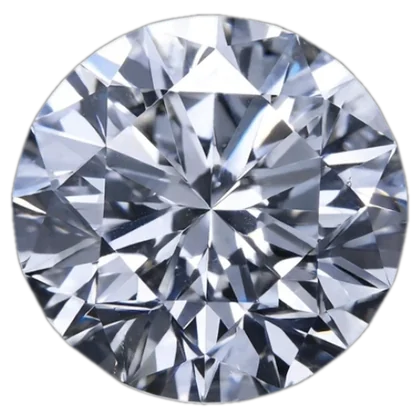

lab vs natural
Лабораторный против натурального
Один и тот же углерод, одна твёрдость, один блеск. Разберём по пунктам, без рекламы — от места рождения камня до цены на бирке.
И там, и там всё начинается с одного и того же элемента — углерод, номер шесть в таблице Менделеева. Разница появится не в составе. Она появится в пути.
01 — место
Где рождается камень
В камере размером со стиральную машину. Инженеры воссоздают то же давление и температуру, что и в мантии Земли, — только под контролем и на столе.
В 150–200 километрах под поверхностью Земли, в мантии, при температуре около 1200°C и давлении, которое сложно представить.
02 — время
Сколько это занимает
От двух до четырёх недель. HPHT напрямую повторяет условия мантии. CVD работает иначе: газ превращают в плазму, и атомы углерода оседают на затравку — как невидимый снег, слой за слоем.
От одного до трёх миллиардов лет. На поверхность камень выносят кимберлитовые извержения, случившиеся десятки миллионов лет назад.
03 — результат
Тот же камень

Одна кристаллическая решётка. Одна твёрдость — 10 по Моосу, максимум из возможного. Один блеск, одно преломление света. Различить эти два камня не может ни ювелир, ни геммолог, ни лупа — только спектрометр, и то не всегда.
В 2018 году американская Федеральная торговая комиссия убрала слово «природный» из определения алмаза. Выращенный камень перестал считаться имитацией — он просто алмаз другого происхождения.
04 — огранка
Дальше — путь один
Сырой кристалл, выращенный или найденный, попадает в руки одного и того же мастера. Те же станки, та же формула четырёх C — карат, огранка, цвет, чистота. С этого момента разницы в камне больше нет — есть только качество огранки.
05 — цена
Вот где всё меняется
Несколько недель работы реактора и электричества — вот и вся себестоимость. При тех же характеристиках цена в разы ниже: покупатели выращенного камня платят в среднем около $4300 за два карата.
Геологоразведка, добыча, логистика, редкость. Покупатели природного платят около $7000 за 1,6 карата — за внешне такой же, но меньший камень.
И сразу честно: ни один из двух камней не является инвестицией. Выращенные дешевеют вслед за технологией и плохо уходят на вторичном рынке. Но и природные перестали быть тихой гаванью: карат, который в 2021 году стоил около $6000, позже продавали уже за $4200. Камень стоит покупать потому, что он красивый, а не потому, что «сохранит деньги». Для денег есть другие инструменты.
06 — миф
Кто решил, что это дорого
Традиция дарить бриллиант на помолвку — не древняя. В 1938 году De Beers наняла рекламное агентство N. W. Ayer, и оно не стало давать обычную рекламу — оно начало менять культуру вокруг помолвки. Камни появились на руках голливудских звёзд, журналы писали о кольцах знаменитостей, и в обиход вошла мысль, что серьёзное предложение требует серьёзного бриллианта.
В 1947 году появилась фраза «Diamonds are forever». У неё был и второй, менее очевидный эффект: если камень навсегда, его неправильно продавать. Миллионы уже проданных бриллиантов осели в семейных шкатулках и никогда не вернулись на рынок конкурировать с новыми.
Ирония в том, что первый искусственный алмаз получили ещё в 1954 году — физик Трейси Холл в лаборатории General Electric. За открытие, из которого выросла целая индустрия, компания выдала ему сберегательную облигацию на десять долларов.
07 — рынок
Это уже не альтернатива, а норма
В 2019 году выращенный камень выбирали 12% пар. В 2024-м он впервые перевесил природный, а в 2025-м занял уже 61% рынка. Это не нишевый выбор и не компромисс — это то, что сегодня выбирает большинство.
Показательнее всего история самой De Beers. В 2018 году компания запустила собственный бренд выращенных камней Lightbox, чтобы доказать: это дешёвая модная бижутерия, а не «настоящие» украшения. В 2025-м Lightbox закрыли. Рынок решил иначе.
итого
Так в чём разница?
Не в камне. В том, что за ним стоит: планета и миллиард лет — или лаборатория и несколько недель. Эта разница и определяет цену. Alchemyth выбрала второй путь — не потому что он проще, а потому что результат тот же, а происхождение честнее.